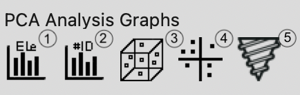

Functions and Methods¶
This program offers two primary categories of plotting functions: PCA (Principal Component Analysis) and Data Clustering. There are two types of PCA (Normal and Kernel) and various clustering methods. Class prediction is also available under the Supervised Learning section. For more information on the differences between the PCAs and types of clustering methods please click on the links below:
Plotting Functions:
- PCA Functions
- 
{kind=link}
- PC Bar Graph by elements:
This function creates and displays bar graphs for each PC component by elements. The class supports sorting and grouping elements, the user can select specific elements to group and plot together, and when Sort Label is selected, each of the selected groups is sorted based on their PC values for each PC component.
Steps:i. Select elements to group ii. Select group/s to plot
ii. Select group/s to plot
- PC Bar Graph by samples:

- PCA 3D Biplot

- PCA 2D Biplot
 Box Plot :
Box Plot :
- Drill Hole Depth Chart
{kind=link}
Clustering Function

Before diving into the different plotting functions, it’s important to understand the different types of clustering methods available. Some clustering methods allow the user to select the number of clusters; these methods include K-means, Hierarchical, Spectral, Gaussian Mixture Model (GMM), and BIRCH. Users can choose the number of clusters based on recommendations from tools like Yellowbrick(for more detail click here) or decide independently. On the other hand, some clustering methods automatically determine the optimal number of clusters; including DBSCAN, Mean-Shift, and Affinity Propagation. For more information on the different clustering methods and their processing logic, click here. #data saving is available for all clustering functions, for more information on the steps click here.
- PC Cluster BarGraph by elements

- PC Cluster BarGraph by Samples

- Cluster 3D Biplot

- Cluster 2D biplot
{kind=link}
{kind=link}
Supervised learning is a category of machine learning that uses labelled datasets to train algorithms/models to predict outputs and observe patterns; it is commonly used for classification tasks and data predictions.
- Supervised Learnings-Data Prediction
 ii) Adjust parameters and select the column to predict. (Original Parameters set to default setting)
ii) Adjust parameters and select the column to predict. (Original Parameters set to default setting) iii) Input data manually or by importing an Excel Sheet
iii) Input data manually or by importing an Excel Sheet
Manually: Click on the plus button to create new rows for input data

b) Import Excel: Upload an Excel file with the correct format (see below)

Sample Excel Spread-Sheet:
 iv) Input/modify data and predict
iv) Input/modify data and predict v) View prediction at the bottom. Column names that don’t match in the original Excel file will be excluded and printed as a warning.
v) View prediction at the bottom. Column names that don’t match in the original Excel file will be excluded and printed as a warning.